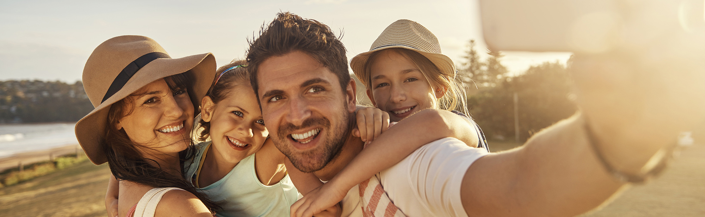
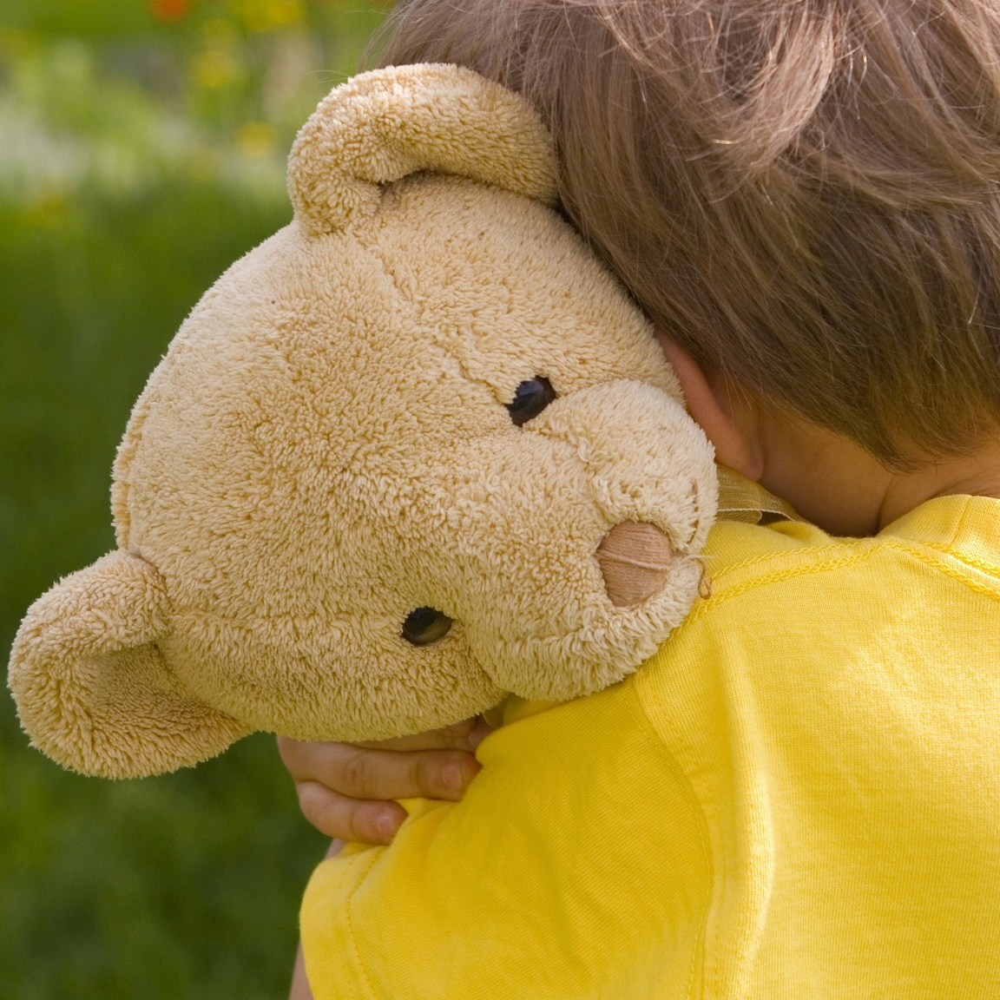
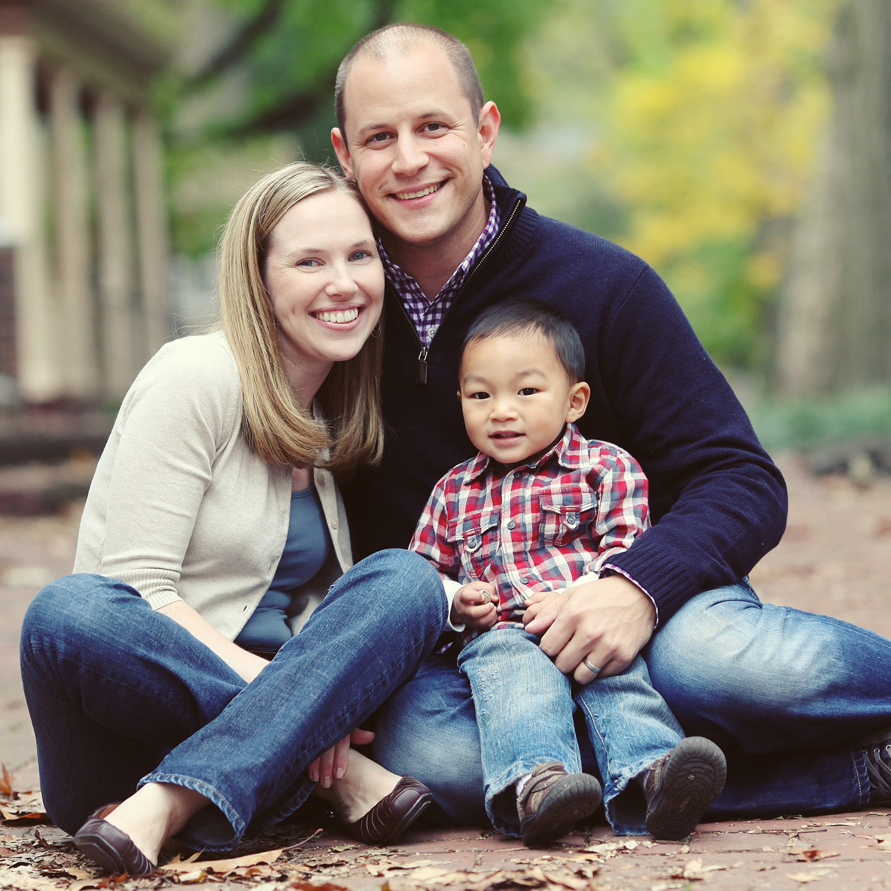
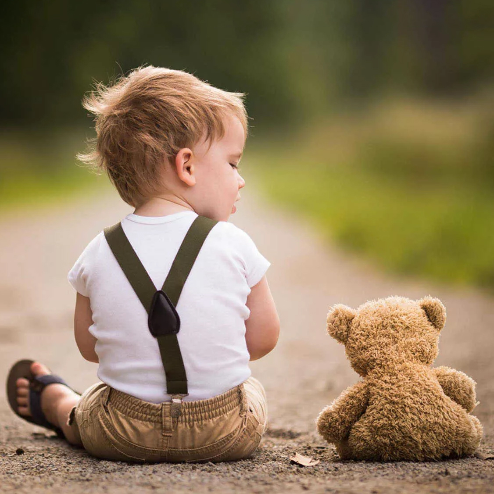
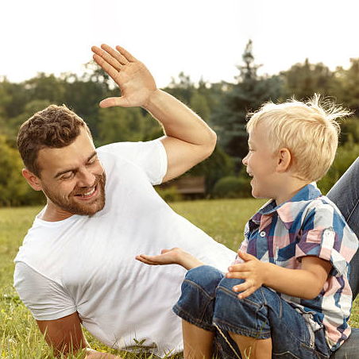

ПРИЕМНЫМ РОДИТЕЛЯМ
Мы поддерживаем принимающих родителей: уже состоявшиеся приемные семьи и тех,
кто еще только готовится ими стать. Вы можете обратиться за помощью специалистов нашего фонда.
- Информационный центр "Дети в семье": любые вопросы, касающиеся семейного устройства,
можно задать консультантам нашей горячей линии по телефону 8-800-700-88-05.
Также есть возможность получить очные консультации психологов, юристов,
дефектологов/логопедов в офисе фонда по предварительной записи.
Запись необходимо произвести по телефону 8(985)9985975 (будни с 9 до 18).
- Школа приемных родителей: мы проводим обучение потенциальных приемных родителей,
которые готовы стать временной поддержкой для ребенка и его семьи для того, чтобы дети не
попадали в сиротские учреждения. В том случае, если их кровные или приемные родители оказались
в сложной жизненной ситуации.
-
На сайте проекта "Территория без сирот"
www.opekaweb.ru можно найти фото- и видеоанкеты детей-сирот, которым
необходима семья.
- Мы поддерживаем приемных родителей в лечении и реабилитации детей с особенностями развития
и сложными заболеваниями в рамках проекта "Близкие люди".

Мы проводим медиации между приемной и кровной семьей , способствуя разрешению конфликтов и споров между опекунами и кровными
родственниками, снижая возможные травматичные последствия для ребенка. По любым вопросам, связанным с медиацией, вы можете обратиться
к нашему психологу, специалисту по медиации, Гусаровой Наталье — 8 (903) 797-03-24.
|  |
ПРОЕКТ "БЛИЗКИЕ ЛЮДИ"
Проект "Близкие люди" помогает семьям, принявшим на воспитание детей с особенностями развития, со сложными или редкими заболеваниями
в решении многочисленных вопросов, связанных с состоянием здоровья и системой реабилитации ребенка.
Узнать больше
|
|  |
ПРОЕКТ "ИНФОРМАЦИОННЫЙ ЦЕНТР "ДЕТИ В СЕМЬЕ"
Специалисты проекта оказывают юридическую, психологическую, информационную помощь как семьям, которые только готовятся к воспитанию
ребенка-сироты, так и состоявшимся приемным родителям.
Узнать больше
|
|  |
ПРОЕКТ "ТЕРРИТОРИЯ БЕЗ СИРОТ"
Мы оказываем содействие в распространении информации о детях-сиротах и детях, оставшихся без попечения родителей, а также информационную
и методическую поддержку муниципальным органам опеки и попечительства.
Узнать больше
|
|  |
ШКОЛА ПРИЕМНЫХ РОДИТЕЛЕЙ
Кандидаты в приемные родители, которые планируют взять ребенка и ранее не обучались в ШПР, могут пройти общий курс подготовки. Cемьи, которые
готовы стать временной поддержкой для ребенка, могут посетить краткосрочные модули.
Узнать больше
|